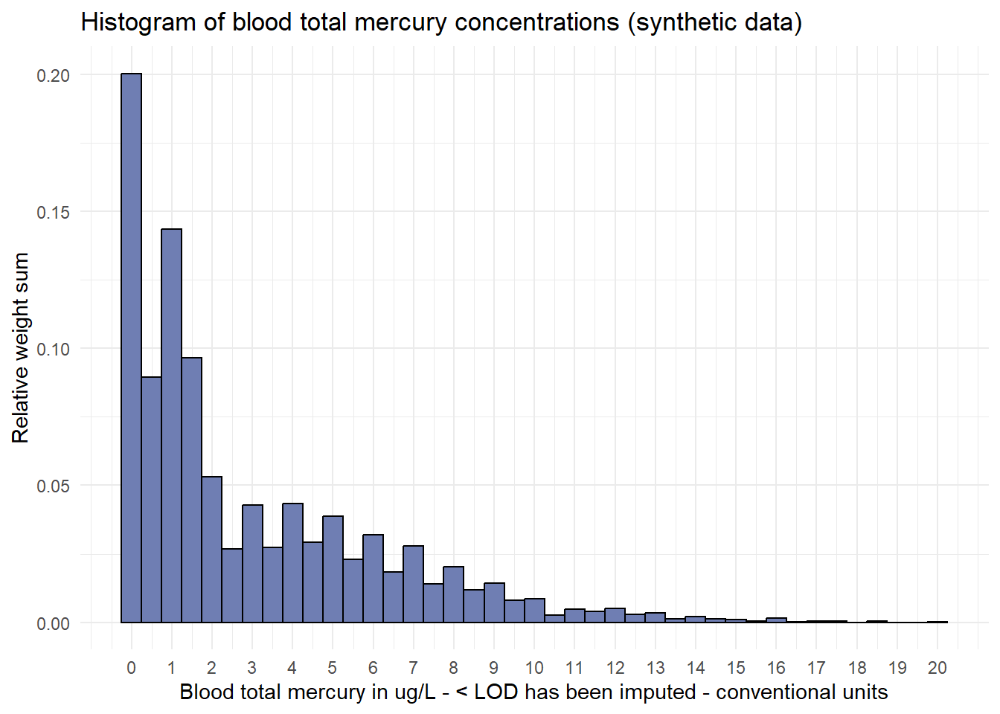

Step 5
Step 5a: histogram
Produces a weighted histogram of the distribution of total blood mercury concentrations across the population.
# Specify survey design
survey_design <- c3full %>%
mutate(
prop_weight = WGT_FULL / sum(WGT_FULL)
) %>%
as_survey_rep(
variables = Bmercury_CU,
weights = prop_weight,
repweights = starts_with("bsw"),
type = "BRR",
mse = TRUE
)
# Set degrees of freedom to 11 (16 sites - 5 Regions)
survey_design$degf <- 11
# Render weighted histogram
ggplot(
data = survey_design$variables %>% na.omit(),
mapping = aes(
x = Bmercury_CU
)
) +
geom_histogram(
aes(
y = after_stat(count / sum(count)),
),
binwidth = 0.5,
fill = "#6F7EB3",
color = "black"
) +
scale_x_continuous(
breaks = seq(from = 0, to = 20, by = 1)
) +
labs(
title = "Histogram of blood total mercury concentrations (synthetic data)",
x = "Blood total mercury in ug/L - < LOD has been imputed - conventional units",
y = "Relative weight sum"
) +
theme_minimal()
Step 5b: estimate geometric mean and confidence intervals
Geometric mean
# Specify survey design
survey_design <- c3full %>%
as_survey_rep(
variables = c(
"Bmercury_CU",
"Bmercury_CU_log",
"agegrp"
),
weights = WGT_FULL,
repweights = starts_with("bsw"),
type = "BRR",
mse = TRUE
)
# Set degrees of freedom to 11 (16 sites - 5 Regions)
survey_design$degf <- 11
# Compute survey statistics
(
stats <- svymean(
x = ~ Bmercury_CU_log,
design = survey_design,
na.rm = TRUE
)
)
## mean SE
## Bmercury_CU_log 0.46022 0.0254
# Export results to a csv file
write.csv(
x = stats,
file = "data/geometric-mean-Bmercury_CU_log.csv",
row.names = FALSE,
na = ""
)Domain analysis
# Compute survey statistics
(
hgage <- svyby(
formula = ~ Bmercury_CU + Bmercury_CU_log,
by = ~ agegrp,
design = survey_design,
FUN = svymean,
vartype = c("se","cv"),
keep.var = TRUE,
na.rm = TRUE
)
)
## agegrp Bmercury_CU Bmercury_CU_log se1 se2 cv.Bmercury_CU
## 1 1 2.415222 0.2603190 0.09773800 0.05278050 0.04046750
## 2 2 2.624472 0.3743866 0.11770421 0.05095392 0.04484872
## 3 3 2.405474 0.3038183 0.04339746 0.02463062 0.01804113
## 4 4 3.492874 0.5301177 0.11875332 0.02360946 0.03399874
## 5 5 3.379534 0.4662747 0.16987404 0.06289319 0.05026552
## 6 6 3.394908 0.5017597 0.11806971 0.04798998 0.03477847
## cv.Bmercury_CU_log
## 1 0.20275312
## 2 0.13609972
## 3 0.08107025
## 4 0.04453627
## 5 0.13488441
## 6 0.09564337
# Export results to a csv file
write.csv(
x = hgage,
file = "data/domain-analysis-Bmercury_CU-by-agegrp.csv",
row.names = FALSE,
na = ""
)Step 5c: testing differences between geometric means
Tests whether the geometric mean concentration of total blood mercury for 3- to 5-year-olds is statistically different from each of the older age groups.
Generalized linear model
# Re-level the agegrp factor
survey_design$variables$agegrp <- relevel(
x = survey_design$variables$agegrp,
ref = 1
)
# Fit a survey-weighted generalized linear model
hgage <- svyglm(
formula = Bmercury_CU_log ~ agegrp,
design = na.omit(survey_design) %>%
na.omit
)
# Render model summary
summary(hgage)
##
## Call:
## svyglm(formula = Bmercury_CU_log ~ agegrp, design = na.omit(survey_design) %>%
## na.omit)
##
## Survey design:
## Called via srvyr
##
## Coefficients:
## Estimate Std. Error t value Pr(>|t|)
## (Intercept) 0.26032 0.05278 4.932 0.00262 **
## agegrp2 0.11407 0.07585 1.504 0.18332
## agegrp3 0.04350 0.06053 0.719 0.49937
## agegrp4 0.26980 0.06416 4.205 0.00565 **
## agegrp5 0.20596 0.08509 2.420 0.05183 .
## agegrp6 0.24144 0.06591 3.663 0.01054 *
## ---
## Signif. codes: 0 '***' 0.001 '**' 0.01 '*' 0.05 '.' 0.1 ' ' 1
##
## (Dispersion parameter for gaussian family taken to be 9982.204)
##
## Number of Fisher Scoring iterations: 2Wald test
# Render Wald test statistics
regTermTest(
model = hgage,
test.terms = ~ agegrp,
df = 11
)
## Wald test for agegrp
## in svyglm(formula = Bmercury_CU_log ~ agegrp, design = na.omit(survey_design) %>%
## na.omit)
## F = 18.93811 on 5 and 11 df: p= 4.5187e-05Multiple test correction
# False discovery rate, the expected proportion of false discoveries among the rejected hypotheses.
# The false discovery rate is a less stringent condition than the family-wise error rate, so these methods are more powerful than the others.
# Create a vector of coefficients
coefficients <- as_tibble(coef(summary(hgage))) %>%
select(`Pr(>|t|)`) %>%
unlist
# Add names to coefficients
names(coefficients) <- names(hgage$coefficients)
# Render adjusted p-values
p.adjust(
p = coefficients[-1],
method = "fdr"
)
## agegrp2 agegrp3 agegrp4 agegrp5 agegrp6
## 0.22915118 0.49936871 0.02635124 0.08638865 0.02635124